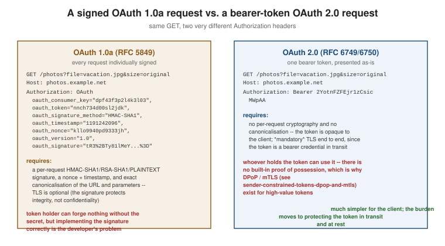

OAuth 1.0 vs. OAuth 2.0
|
This content was generated with the assistance of AI and should be verified against the official documentation before being relied on in production. |
OAuth 1.0a and OAuth 2.0 (RFC 6749) are not the same protocol with a version bump — 2.0 is a deliberate redesign, and every one of its major decisions is a direct response to something 1.0a made hard. This page pairs each 1.0 limitation with what 2.0 did about it, then gives the honest counter-column: what 2.0 gave up to get there, and how the ecosystem eventually closed most of that gap. Read OAuth 1.0a first if the signature mechanics below are unfamiliar.
Limitation by limitation
Per-request cryptographic signatures → bearer tokens over mandatory TLS
OAuth 1.0a required every single request to be individually signed: the consumer built a canonical signature base string from the HTTP method, the URL and every parameter, computed an HMAC-SHA1 (or RSA-SHA1, or PLAINTEXT) signature over it, and the service provider had to reconstruct the identical base string to verify it. Three concrete costs followed directly from this:
-
Developer burden. Every client library, in every language, had to implement request signing correctly — there was no way to "just add a header" the way a bearer token allows.
-
Canonicalisation and encoding interop bugs. If the client and server disagreed by even one character on how a parameter was percent-encoded, in what order parameters were sorted, or whether a default port was included in the base URL, the signatures would not match and the request would be rejected — a category of bug that had nothing to do with whether the caller was actually authorized.
-
No story for library-less clients. A
curlone-liner, a shell script, or a minimal embedded device could not participate without either a full OAuth 1.0a signing library or hand-rolled, easy-to-get-wrong cryptography.
OAuth 2.0’s answer, from OAuth WRAP through RFC 6749/6750, is the bearer token: a single opaque or structured
string presented as Authorization: Bearer <token>, no signing step, no canonicalisation, verified by
comparing (or decoding) the token itself rather than recomputing anything from the request. The cost moves
entirely onto transport security — TLS is not optional the way it was under 1.0a, because a bearer token
gives an eavesdropper everything a signature never would.
No separation of authorization server from resource server → explicit role split and centralised issuance
RFC 5849 has no equivalent of RFC 6749’s authorization server / resource server split as distinct, named roles with different responsibilities — the "service provider" issued tokens and served resources as one undifferentiated party. OAuth 2.0 makes the split explicit (see Getting started with OAuth) and, crucially, makes centralised token issuance a first-class deployment pattern: one authorization server can issue tokens honoured by many independently operated resource servers, each validating locally (for a JWT) or by calling back to the issuer (for introspection) — exactly the shape a microservice architecture with one identity provider and many APIs needs, and exactly what 1.0a’s single undifferentiated "service provider" role does not describe.
One flow for one client shape → grant types for every client shape
OAuth 1.0a has one flow (three-legged, or its two-legged reduction) that every consumer uses regardless of what kind of application it is. OAuth 2.0 instead defines grant types — and the ecosystem has kept adding more since — each matched to a specific client shape: authorization code for server-side web apps (and, with PKCE, for public clients too — details), client credentials for service-to-service calls with no user (details), the device authorization grant for input-constrained hardware (details), and token exchange and assertion grants for delegation across service boundaries (details). See Flows overview for the full decision tree.
No token expiry or renewal → short-lived access tokens plus refresh tokens
An OAuth 1.0a access token, once issued, is typically long-lived by convention, with no standardised expiry or
renewal mechanism — revoking it usually meant the service provider deleting it out-of-band. OAuth 2.0 makes
short-lived access tokens the norm, with expires_in in every token response, and adds the refresh token
as a separate, longer-lived credential used only at the token endpoint to obtain a new access token without
repeating the whole interactive flow. This bounds the blast radius of a leaked access token to its (short)
lifetime, and lets rotation, reuse detection and revocation of the refresh token happen independently — the
whole subject of Access and refresh tokens.
No scopes → scope
OAuth 1.0a grants access to "whatever the service provider’s authorization page said it was granting", with no
standardised, machine-readable way for the consumer to request a narrower capability or for the token to
carry one. OAuth 2.0’s scope parameter, present on the authorization request, the token request and the
token response, makes the requested capability explicit and inspectable at every stage, and is the seed for the
richer models — claims, Rich Authorization Requests, resource indicators — covered on
Scopes, claims and permissions.
A closed spec → an extension framework
RFC 5849 describes a complete, fixed protocol: implementing it means implementing exactly what it says, and extending it means writing a new specification from scratch. RFC 6749 was deliberately written as a framework with explicit extension points — new grant types, new token types, new client-authentication methods — which is exactly why the entire extension decade (PKCE, device flow, token exchange, DPoP, PAR, JAR, and more) could ship as independent RFCs against the same base specification rather than requiring a new major version of the protocol every time the ecosystem needed something new.
The honest counter-column: what 2.0 gave up
None of the above was free. OAuth 2.0’s redesign traded away two properties OAuth 1.0a had, and both took years to get back.
No built-in proof of possession
A signed OAuth 1.0a request cannot be replayed by someone who merely intercepts it in transit, because the signature is bound to that specific request and the attacker does not have the secret needed to forge a new one. A bearer token has no such property by design: whoever holds it, can use it — a token that leaks through a logging pipeline, a referrer header, a misconfigured proxy, or a compromised browser extension is immediately and fully usable by whoever obtained it, indistinguishably from the legitimate client. RFC 6749/6750 accepted this trade-off explicitly in exchange for the simplicity described above; the gap sat unresolved in mainstream practice for the better part of a decade before mTLS-bound tokens (RFC 8705) and DPoP (RFC 9449) reintroduced proof of possession, deliberately narrowed to the deployments and token types where the cost is worth paying — see Sender-constrained tokens: DPoP and mTLS. In a real sense, this is OAuth 1.0a’s request-signing insight returning to OAuth 2.0, just no longer applied to every single request by every single client.
"A framework, not a protocol"
Eran Hammer-Lahav’s resignation complaint (covered in full) was
precisely this: because RFC 6749 leaves so much to profiling — which grants a deployment supports, which client
authentication methods, whether and how tokens are structured — two independently built, fully compliant OAuth
2.0 implementations are not guaranteed to interoperate without extra, out-of-band agreement. OAuth 1.0a’s
narrower, more fully specified protocol did not have this problem, simply because it left less undefined. The
ecosystem’s answer has been layered rather than a single fix: discovery (RFC 8414/9728) lets a client learn a
given deployment’s actual profile at runtime instead of assuming one;
the Security BCP (RFC 9700) narrows the security-relevant
choices to one recommended answer each; FAPI (the Financial-grade API profiles) goes further still, fixing
essentially every optional choice for regulated, high-assurance deployments; and the in-progress
OAuth 2.1 consolidation (draft-ietf-oauth-v2-1-16) folds a
large slice of that accumulated agreement back into the base specification itself, closing much (not all) of
the interoperability gap Hammer-Lahav warned about, without abandoning the extensibility that made the
extension decade possible in the first place.
Side-by-side
| OAuth 1.0a (RFC 5849) | OAuth 2.0 (RFC 6749/6750) | |
|---|---|---|
Credential on the wire |
A signature computed from a shared or asymmetric secret; the secret itself is never transmitted |
A bearer token, transmitted and usable as-is by whoever holds it |
Transport requirement |
TLS recommended, not mandated by the signature mechanism itself |
TLS mandatory — the bearer token has no protection of its own |
Proof of possession |
Built in, on every request, via the signature |
None by default; added back selectively via mTLS (RFC 8705) or DPoP (RFC 9449) |
Roles |
Undifferentiated "service provider" issues tokens and serves resources |
Explicit authorization server / resource server split, enabling centralised issuance |
Flow shape |
One flow (three-legged, or two-legged) for every consumer |
A grant type per client shape (authorization code + PKCE, client credentials, device code, token exchange, …) |
Token lifetime |
Long-lived by convention, no standard expiry or renewal |
Short-lived access tokens ( |
Granularity of access |
Whatever the provider’s authorization page granted; not machine-readable |
|
Extensibility |
A fixed, complete specification; extending it means a new spec |
A framework with explicit extension points; ~20 extension RFCs layered on the same base |
Interoperability |
High, because little is left optional |
Historically uneven; narrowed by discovery, the Security BCP, FAPI, and the OAuth 2.1 consolidation |

Where the community landed
Neither protocol is "simply better" in the abstract. OAuth 1.0a’s mandatory per-request signing gives every request built-in integrity and replay protection at the cost of implementation complexity and interoperability friction; OAuth 2.0’s bearer-token model is dramatically simpler to implement and extend, at the cost of depending entirely on transport security and needing a decade of follow-on specifications to recover the guarantees 1.0a had from day one. In practice, the industry has settled on OAuth 2.0 (heading toward its 2.1 consolidation) precisely because its extension framework let it grow proof of possession, discovery, and a security best-practice baseline back in, piece by piece, without forcing every implementer to hand-roll request-signing correctly to get started — but every one of 1.0a’s original concerns is now addressed somewhere in the current specification family, just as an opt-in layered on top of a simpler default rather than a universal requirement.
Migrating a consumer from 1.0a to 2.0
A team that still operates an OAuth 1.0a integration and is planning to move it (or the provider it talks to) to OAuth 2.0 will typically go through the same handful of changes, regardless of language or platform:
-
Replace the signing step with a client-authentication choice. Where the 1.0a consumer computed an HMAC-SHA1/RSA-SHA1 base string, the 2.0 client instead picks one of the methods on Client credentials and client authentication — typically
client_secret_basicto start, moving toprivate_key_jwtor mTLS if the integration is high-value. -
Replace the request-token step with an authorization-code request. The 1.0a "obtain an unauthorized request token" call disappears; the flow now starts directly at
/authorizewithresponse_type=codeand, for any public client, a PKCEcode_challenge— see Getting started with OAuth for the full round-trip. -
Replace
oauth_verifierredemption with the/tokencall. The shape is similar — present something you received from the redirect to a back-channel endpoint — but the parameters, the client authentication, and the JSON response format all change; see Authorization code and PKCE. -
Plan for token expiry. A 1.0a access token that "just worked" indefinitely becomes a short-lived OAuth 2.0 access token that must be refreshed; build the refresh-token handling described on Access and refresh tokens before cutting over, not after.
-
Add TLS everywhere, if it was not already there. A 1.0a integration that relied on signatures rather than TLS for integrity must now treat TLS as non-negotiable, since a bearer token has no protection of its own in transit.
None of this can usually happen as a single flag flip: most providers that support both versions run them as genuinely separate endpoints and credentials, so a migration is a parallel integration followed by a cutover, not an in-place upgrade.
Where to go next
-
OAuth 1.0a — the mechanics referenced throughout this page.
-
How OAuth evolved — the full narrative and the extension-RFC table.
-
Sender-constrained tokens: DPoP and mTLS — where proof of possession returns to OAuth 2.0.
-
Security best practices — RFC 9700 as an actionable checklist.